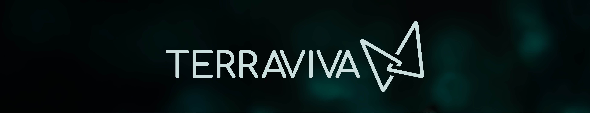
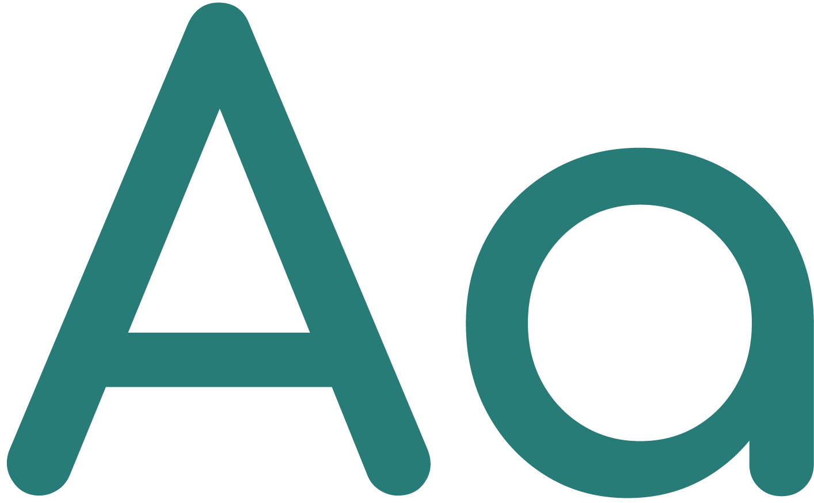
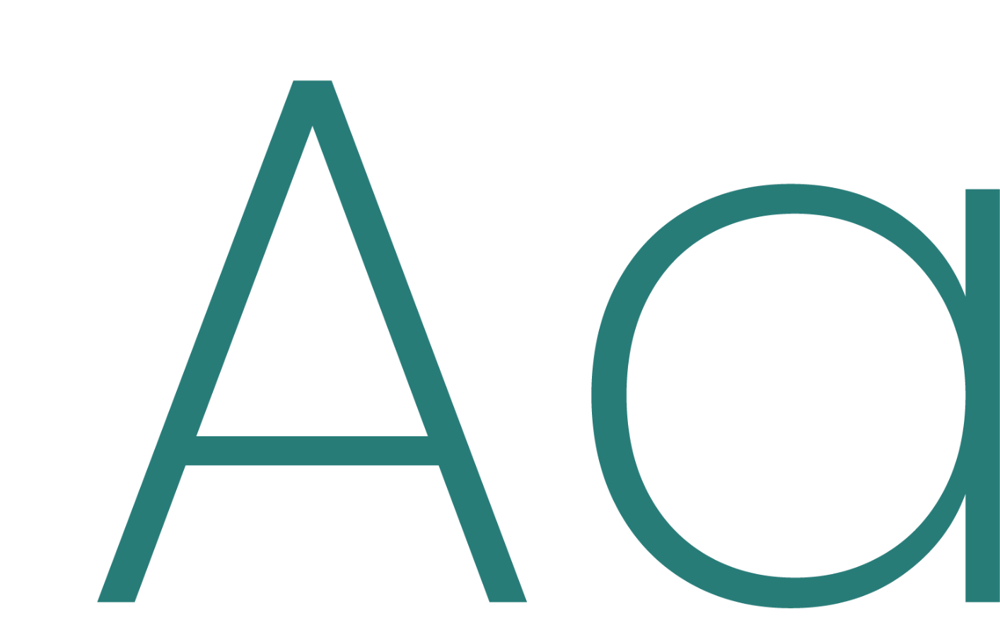
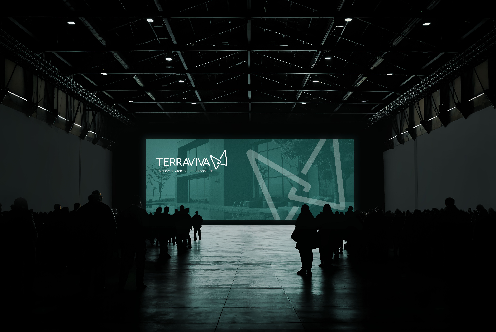

In collaboration with Leandro Marin Brand Identity Self-initiated | Contest Entry Graphic Designer Leandro Marin Logo, Visual Identity The butterfly, a symbol of renewal. No leaf, no obvious eco-icon — the concept starts from TerraViva's own philosophy instead: innovative practices built around environmental and social sustainability. Crafted from golden triangles, the butterfly carries that idea directly — transformation, and the balance between nature and geometry. A modern, urban read on what sustainability can look like.
Typeface sets the tone before a single word is read. Comfortaa Bold gives it structure; Poppins keeps it grounded.
The result: a mark built on creativity, precision, and ecological awareness — TerraViva's own values, made visible.

#277C77
#5D9D99
#93BEBB
#C9DEDD
#F84E58
Choosing the right typeface is crucial—it sets the tone and evokes an emotional response even before the words are read. A typeface’s personality should align with the project’s purpose to truly connect with the audience.

comfortaa bold

poppins

This logo proposal for TerraViva visually expresses sustainability, innovation, and aesthetic harmony. The butterfly—crafted from golden triangles—symbolizes transformation and the balance between
nature and geometry.
Moving beyond common eco-symbols like leaves, it offers a modern, urban take on environmental responsibility.
The result is a distinctive emblem that reflects TerraViva’s core values: creativity, precision, and ecological awareness.